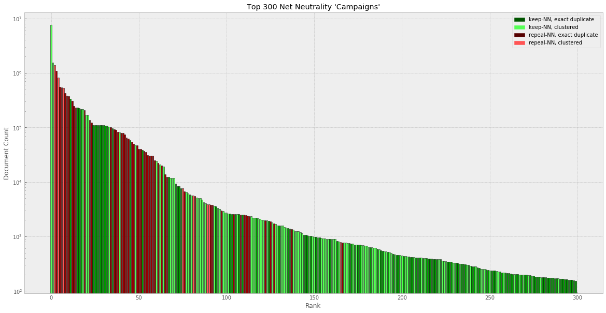
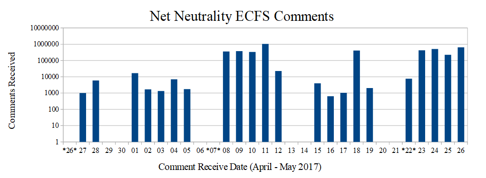

Net Neutrality Comments
May 04, 2020
This research article by Mr. Jeff Kao is a compelling analysis of all the 2017 FCC comments and the origin of the 99.7% statistic favoring Net Neutrality regulation. His strategy of using "semantic space vectors" and running "some clustering algorithms on the meaning...", after first collating exact duplicates, is the best method to avoid missing the tree for the forests.
The first major result is, "after clustering comment categories and removing duplicates,...let's look at the top 300 comment campaigns that comprise an astonishing 21M+ of the 22M+ submissions", which suggests the FCC has far fewer comments to consider rather than votes to count.
[from More than a Million Pro-Repeal Net Neutrality Comments were Likely Faked, Kao Article]
The second major result, "After clustering comment categories and removing duplicates, I found that less than 800,000 of the 22M+ comments submitted to the FCC (3-4%) could be considered truly unique ... taking a 1000 comment random sample .., I was only able to find three comments that were clearly pro-repeal." Thus the more widely cited 99.7% pro-net Neutrality statistic.
For the tree in the forest, a request for comments is supposed to be an accounting of the arguements, not a counting of the votes, nevertheless I find it disturbing to be in the 0.3%. There may be a little more contextual data readily available: here are the number of comments filed each day for the first month of the petition.
The "Restoring Internet Freedom" petition was created on April 26, 2017 and was featured on the Sunday night show Last Week Tonight with John Oliver on May 7th, following which comment rates increased more than a hundred-fold.
I hypothesize that the percentage of comments pro/opposed before May 7th are either more or less representative than after it became widely publisized, and that no fancy algorithms, just statistics would be required to analyze that data.